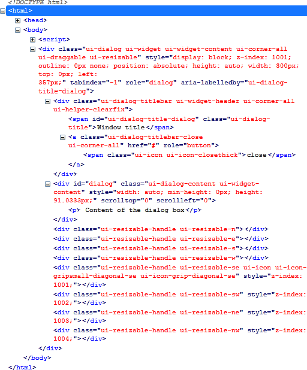
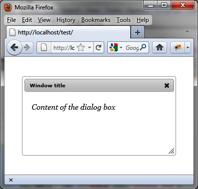

{% include JB/setup %}
{% raw %}
<div>
<div class="book" title="Formatting Content"><div class="book"><div class="book"><div class="book"><h1 class="title2"><a id="formatting_content-id2" class="calibre1"></a>Formatting Content</h1></div></div></div><p class="calibre7">Using the <code class="literal">dialog ()</code> method
    drastically changes the appearance of HTML elements on the rendered page.
    Indeed, this method scans the HTML and adds new CSS classes to the
    elements concerned (here, the dialog boxes) to give them the appropriate
    style.</p><p class="calibre7">Here, for example, the HTML code that appears after the <code class="literal">dialog ()</code> instruction has been changed (<a class="ulink" href="ch04s02.html#html_code_generated_with_the_dialog_open" title="Figure 4-3. HTML code generated with the dialog () method">Figure 4-3</a>). This code was
    retrieved using the Firebug extension in <span class="firstname">Firefox.</span></p><div class="figure"><a id="html_code_generated_with_the_dialog_open" class="firstname"></a><div class="book"><div class="book"><a id="I_mediaobject4_d1e2570" class="firstname"></a></div></div><p class="title4">Figure 4-3. HTML code generated with the dialog () method</p></div><p class="calibre7">These CSS classes can customize the display of elements. For
    example, if we change the <code class="literal">ui-dialog-titlebar</code> CSS class associated with
    <code class="literal">&lt;div&gt;</code> elements, we get a new
    aspect for the window title. Similarly, if we change the <code class="literal">ui-dialog-content</code> CSS class associated with
    <code class="literal">&lt;div&gt;</code> elements, we get a new
    appearance for the content of the windows.</p><p class="calibre7">Modify these elements (shown in bold) in the HTML by adding a
    <code class="literal">&lt;style&gt;</code> tag to obtain the layout
    shown in <a class="ulink" href="ch04s02.html#a_customized_dialog_box" title="Figure 4-4. A customized dialog box">Figure 4-4</a>:</p><a id="I_programlisting4_d1e2596" class="firstname"></a><pre class="programlisting">&lt;!DOCTYPE html&gt;
&lt;script src = jquery.js&gt;&lt;/script&gt;
&lt;script src = jqueryui/js/jquery-ui-1.8.16.custom.min.js&gt;&lt;/script&gt;

&lt;link rel=stylesheet type=text/css
      href=jqueryui/css/smoothness/jquery-ui-1.8.16.custom.css /&gt;

<span class="firstname"><strong class="userinput">&lt;style type=text/css&gt;</strong></span>
  <span class="firstname"><strong class="userinput">div.ui-dialog-titlebar {</strong></span>
    <span class="firstname"><strong class="userinput">font-size : 10px;</strong></span>
  <span class="firstname"><strong class="userinput">}</strong></span>
  <span class="firstname"><strong class="userinput">div.ui-dialog-content {</strong></span>
    <span class="firstname"><strong class="userinput">font-size : 15px;</strong></span>
    <span class="firstname"><strong class="userinput">font-family : georgia;</strong></span>
    <span class="firstname"><strong class="userinput">font-style : italic;</strong></span>
  <span class="firstname"><strong class="userinput">}</strong></span>
<span class="firstname"><strong class="userinput">&lt;/style&gt;</strong></span>

&lt;div id="dialog" title="Window title"&gt;
  &lt;p&gt; Content of the dialog box&lt;/p&gt;
&lt;/div&gt;

&lt;script&gt;

$("#dialog").dialog();

&lt;/script&gt;</pre><div class="book"><div class="figure"><a id="a_customized_dialog_box" class="firstname"></a><div class="book"><div class="book"><a id="I_mediaobject4_d1e2632" class="firstname"></a></div></div><p class="title4">Figure 4-4. A customized dialog box</p></div></div><p class="calibre7">This HTML code is identical to the previous, except that we added
    the <code class="literal">&lt;style&gt;</code> tag after the
    inclusion of the jQuery UI styles. The addition of our own styles must be
    done after those of jQuery UI, otherwise our changes will be
    ignored.</p></div></div>

{% endraw %}

